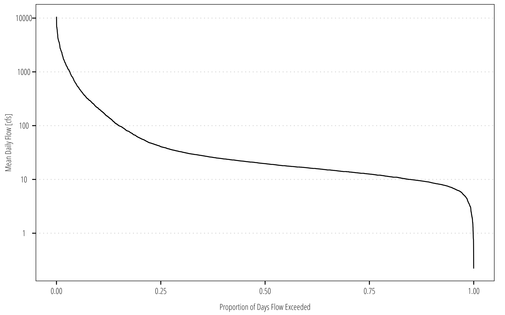
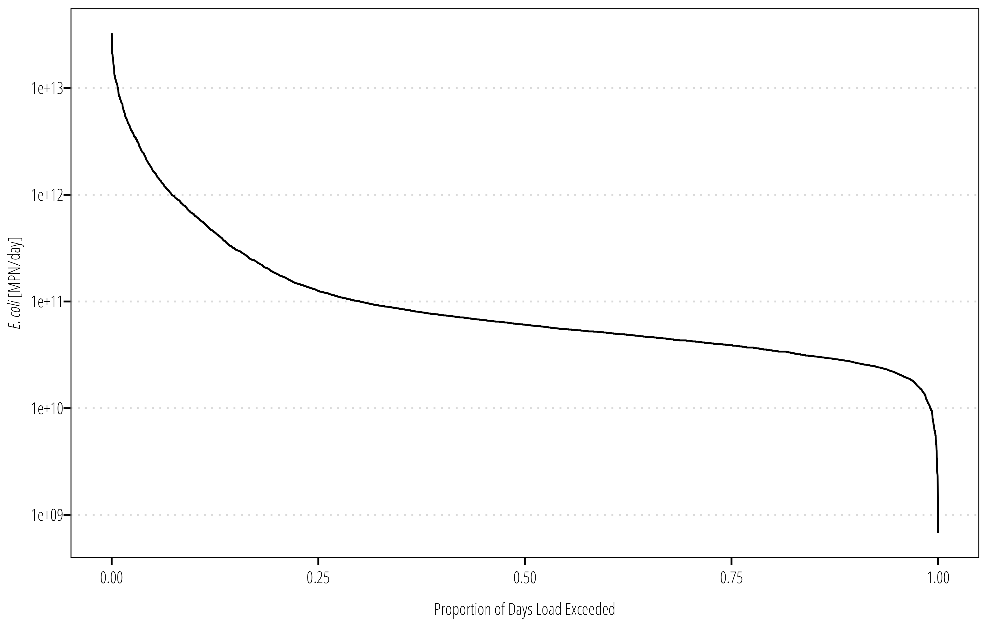
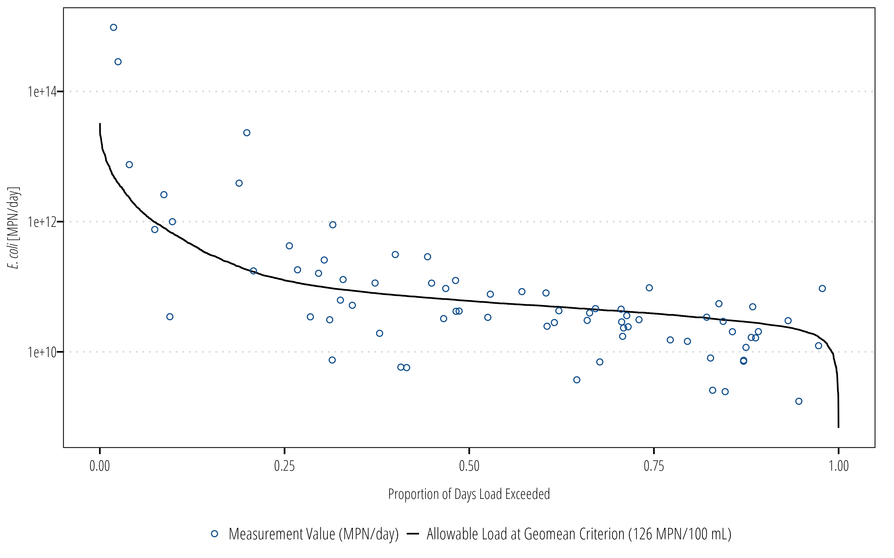
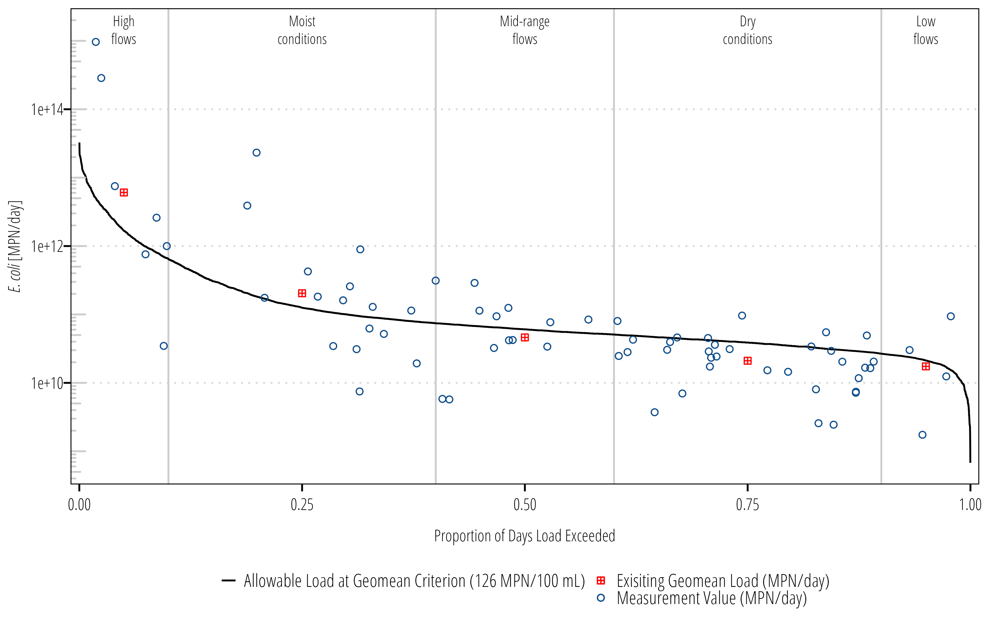

The Load Duration Curve (LDC) is a simple method for visualizing and characterizing water quality concentrations at different flow regimes. It is supported by EPA, TCEQ and TSSWCB for Total Maximum Daily Load (TMDL) and Watershed Protection Plan (WPP) development. The LDC is an extension of a flow duration curve (FDC). The FDC is a cumulative distribution plot with observed mean daily streamflow values on the y-axis and the proportion of time or values that exceed a given flow on the x-axis. More specifically, the FDC displays the exceedance probability \(p\) on the x-axis and the associated discharge, \(Q\), on the y-axis (Vogel and Fennessey 1994). The LDC is developed by multiplying an allowable pollutant concentration (water quality standard or screening level) by the daily streamflow volume to identify the allowable pollutant loads across flow duration intervals. Measured pollutant concentrations are added on top of the duration curve by multiplying the concentration and streamflow volume on a given day to derive an instantaneous load at a given exceedance percentile. By overlaying measured values over the duration curve, we develop some inference for what conditions pollutant concentration and loads exceed water quality thresholds.
The LDC approach is most appropriate in water bodies where there is some type of correlation between flow condition and concentration (typically rivers and streams where loading is tied to runoff and there are not strong accumulation processes). The LDC approach is typically not appropriate for lakes and estuaries. The LDC approach can be modified to account for tidal influences.
U.S. Environmental Protection Agency (2007) provides a good introduction to and discussion on the approriate uses of LDCs that are applicable for both TMDL and WPP development.
7.1 Data
This example uses E. coli bacteria concentrations collected at SWQMIS station 12517 on Tres Palacios Creek. Streamflow data comes from the co-located USGS streamgage 08162600.
7.1.1 Water Quality
Get the data: These examples use the swqmispublicdata.txt data in the example data
We will import water quality data the same way that was covered in Chapter 6.
Streamflow data is obtained from the USGS NWIS using the dataRetrieval package. It is important to note that streamflow data might not be static. USGS might update the data at some point due to new rating curves, data quality checks, etc. We want to work off a snapshot of the data.
Important
In a project workflow, this would be in a data download script that saves your downloaded data to a csv. Then in your analysis script, read the csv data. You can rerun the analysis script without having to re-download the data and possibly running into changes in the source data. Frequent repeated downloads might also cause server issues or your IP getting temporarily blocked or rate-limited by the NWIS server.
# This should be in a separate data download script!Q_df<-readNWISdv(siteNumbers ="08162600", startDate ="2000-01-01", endDate ="2020-12-31", parameterCd ="00060", statCd ="00003")Q_df<-renameNWISColumns(Q_df)|>clean_names()# save the data and work off the saved data# write_csv(Q_df, "data/streamflow_0816200.csv")# Q_df <- read_csv("data/streamflow_0816200.csv")Q_df|>glimpse()
First we will go through a manual method for developing the FDC and LDC. I go through this becuae it is worth understanding the specific steps for developing the FDC and LDC. the ldc is available to streamline these steps, but I highly reccomend understanding the fundamentals first.
7.2.1 Flow Duration Curve
The primary step in calculating the FDC is calculating the exceedance probability for each streamflow value. Without delving into statistics, there are a surprising number of ways to accomplish this. If you have lots of streamflow values, the method you chose does not matter much (Vogel and Fennessey 1994). For manual calculations, we typically calculate the exceedance probability as the rank value of a given flow divided by the the number of streamflow values plus 1 (Morrison and Bonta 2008):
\[
p_i = \frac{i}{n+1}
\] where \(p_i\) is the exceedance probability, \(i\) is the rank number of a given streamflow and \(n\) is the number of observations. \(p_i\) is also called the Weibull plotting position which is the mean of the cumulative distribution function of the \(i\)th observation (Gumbel 1958).
There are two methods for calculating this in dplyr. The first involves the direct calculation by ranking flows in descending order and dividing by length plus one. The second involves using the ppoints() function in R which returns ordered probability points for a given vector. by setting a=0 we specify that the function returns the Weibull plotting positions.
Q_df<-Q_df|>select(date, flow)|>arrange(flow)|>mutate(## direct calculation if you prefer flow_exceedance =rank(desc(flow), ties.method ="last")/(length(flow)+1),## or weibull pp function, you don't need to do both! flow_exceedance_1 =1-ppoints(flow, a =0))ggplot(Q_df)+geom_line(aes(flow_exceedance, flow))+scale_y_log10()+theme_TWRI_print()+labs(y ="Mean Daily Flow [cfs]", x ="Proportion of Days Flow Exceeded")

The resulting FDC shows us the percent of time over the entire period of record that mean daily streamflows were exceeded. For example the above figure shows the max streamflow was around 10,000 cfs and the minimum was less than 1. Also 80% of the time, streamflows exceeded about 10 cfs.
7.2.2 Load Duration Curve
Now the FDC can be converted to an LDC by multiplying the mean daily streamflow volume by the allowable bacteria concentration. The general steps in your head should be:
convert mean daily discharge (cfs) to daily volume for water (cubic feet, mL, whatever);
multiply the measured pollutant concentration by the daily volume
This results in total mass or counts of pollutant per day.
Q_df<-Q_df|># We don't need both flow exceedance columnsselect(-c(flow_exceedance_1))|># MPN/100mL * cubic feet/sec * mL/cubic feet * sec/day = mpn/daymutate(ldc =(126/100)*flow*28316.8*86400)ggplot(Q_df)+geom_line(aes(flow_exceedance, ldc))+scale_y_log10()+theme_TWRI_print()+labs(y ="*E. coli* [MPN/day]", x ="Proportion of Days Load Exceeded")+theme(axis.title.y =element_markdown())

The LDC looks exactly the same as the FDC, the units on the y-axis change to pollutant load per day. The next step is to add the measured concentrations to the figure. We need to join the bacteria data to the flow data, then calculate the measured loads. In order to plot this and label the legends properly, we need to manually set some of the aesthtic values in ggplot2().
ecoli_df<-df|>select(station_id, end_date, parameter_code, value)Q_df<-Q_df|>left_join(ecoli_df, by =c("date"="end_date"))|>mutate(measured_load =(value/100)*flow*28316.8*86400)ggplot(Q_df)+geom_line(aes(flow_exceedance, ldc, linetype ="Allowable Load at Geomean Criterion (126 MPN/100 mL)"))+geom_point(aes(flow_exceedance, measured_load, shape ="Measurement Value (MPN/day)", color ="Measurement Value (MPN/day)"))+scale_y_log10()+scale_shape_manual(name ="values", values =c(21))+scale_color_manual(name ="values", values =c("dodgerblue4"))+theme_TWRI_print()+labs(y ="*E. coli* [MPN/day]", x ="Proportion of Days Load Exceeded")+theme(axis.title.y =element_markdown(), legend.direction ="vertical", legend.title =element_blank())

We can already see general trends in the LDC and bacteria data. There is clearly a higher variance and probably a higher difference in median measured load and allowable load at high flows. As flows decrease (on the right hand side of the graph), a higher proportion of measured loads appear to be below the allowable load line.
There are several ways to quantify this. The easiest to explain to the general audience is to (1) split the flows into different regimes, (2) take the geomean of the loads within the flow regime, and (3) take the difference between geomean measured load and the median allowable load. Alternatively, we could fit a log-regression, LOADEST or generalized additive model to the data to estimate load across all exceedance percentiles. The former approach is shown below:
# create a summary tableload_summary<-Q_df|># classify flow conditions based on exceedancemutate(flow_condition =case_when(flow_exceedance>=0&flow_exceedance<0.1~"Highest Flows",flow_exceedance>=0.1&flow_exceedance<0.4~"Moist Conditions",flow_exceedance>=0.4&flow_exceedance<0.6~"Mid-range Conditions",flow_exceedance>=0.6&flow_exceedance<0.9~"Dry Conditions",flow_exceedance>=0.9&flow_exceedance<=1~"Lowest Flows"))|>group_by(flow_condition)|>summarize(median_flow =quantile(flow, 0.5, type =5, names =FALSE, na.rm =TRUE), median_p =round(quantile(flow_exceedance, .5, type =5, names =FALSE, na.rm =TRUE), 2), geomean_ecoli =Gmean(value, na.rm =TRUE), allowable_load =median_flow*126/100*28316.8*86400, geomean_load =median_flow*geomean_ecoli/100*28316.8*86400, reduction_needed =case_when(allowable_load<geomean_load~geomean_load-allowable_load,allowable_load>=geomean_load~0), percent_reduction_needed =reduction_needed/geomean_load*100)|>arrange(median_p)|>mutate(flow_condition =as_factor(flow_condition))load_summary
Now we have some summary data that includes median values for each flow regime and estimates of required reductions. The next step is to add some info to the ggplot.
# set the y-axis value for the flow-regime labelslabel_max<-max(Q_df$measured_load, na.rm =TRUE)+(0.5*max(Q_df$measured_load, na.rm =TRUE))ggplot(Q_df)+## add some lines to indicate flow regimesgeom_vline(xintercept =c(.10, .40, .60, .90), color ="#cccccc")+## add ldc linegeom_line(aes(flow_exceedance, ldc, linetype ="Allowable Load at Geomean Criterion (126 MPN/100 mL)"))+## add measured loadsgeom_point(aes(flow_exceedance, measured_load, shape ="Measurement Value (MPN/day)", color ="Measurement Value (MPN/day)"))+## add summarized measured loadsgeom_point(data =load_summary, aes(median_p, geomean_load, shape ="Exisiting Geomean Load (MPN/day)", color ="Exisiting Geomean Load (MPN/day)"))+## log10 y-axisscale_y_log10()+## shrink the ends of the x-axis a little bitscale_x_continuous(expand =c(0.005,0.005))+## manually set the shapes for the point aestheticsscale_shape_manual(name ="values", values =c(12, 21))+## manually set the shapes for the color aestheticscale_color_manual(name ="values", values =c("red", "dodgerblue4"))+## I like this tick marks that indicate a log transformed scaleannotation_logticks(sides ="l", color ="#cccccc")+## add some labels to the flow-regimesannotate("text", x =.05, y =label_max, label ="High\nflows", hjust =0.5, size =3, family ="OpenSansCondensed_TWRI", lineheight =1)+annotate("text", x =.25, y =label_max, label ="Moist\nconditions", hjust =0.5, size =3, family ="OpenSansCondensed_TWRI", lineheight =1)+annotate("text", x =.50, y =label_max, label ="Mid-range\nflows", hjust =0.5, size =3, family ="OpenSansCondensed_TWRI", lineheight =1)+annotate("text", x =.75, y =label_max, label ="Dry\nconditions", hjust =0.5, size =3, family ="OpenSansCondensed_TWRI", lineheight =1)+annotate("text", x =.95, y =label_max, label ="Low\nflows", hjust =0.5, size =3, family ="OpenSansCondensed_TWRI", lineheight =1)+## labelslabs(y ="*E. coli* [MPN/day]", x ="Proportion of Days Load Exceeded")+## general themetheme_TWRI_print()+theme(axis.title.y =element_markdown(), legend.direction ="vertical", legend.title =element_blank())

7.3 ldc Package
Some of the steps described above cna be skipped by using the ldc package. The package includes functions for period of record LDCs and annualized LDCs which are not covered here. One important functionality introduced with the package is the use of units.
# install.packages("ldc", # repos = c(txwri = 'https://txwri.r-universe.dev', # CRAN = 'https://cloud.r-project.org'))library(ldc)library(units)## ldc uses the unit package to facilitate unit conversions## we need to make the cfu unit first, since it isn't included ## in the units packageinstall_unit("MPN")## get a new clean dataframe with column of Date, flows, and E. coliQ_df<-readNWISdv(siteNumbers ="08162600", startDate ="2000-01-01", endDate ="2020-12-31", parameterCd ="00060", statCd ="00003")|>renameNWISColumns(Q_df)|>clean_names()|>left_join(ecoli_df, by =c("date"="end_date"))|>## attach a unit to streamflowmutate(flow =set_units(flow, "ft^3/s"), value =set_units(value, "MPN/100mL"))Q_df|>glimpse()
We get the same outputs as the manual method with far fewer functions and less change for copy/paste errors. Another advantage of using ldc is the ability to change units on the fly without digging into a formula.
For example, the summary table shows median daily flow volume as 100ml/day. That isn’t an inuitive unit. Let’s report in million gallons per day instead by using the set_units() function:
Gumbel, E.J. 1958. Statistics of Extreme. New York: Columbia University Press.
Morrison, M.A., and Bonta, J.V. 2008. Development of Duration-Curve Based Methods for Quantifying Variability and Change in Watershed Hydrology and Water Quality. EPA/600/R-08/065. U.S. Environmental Protection Agency. https://nepis.epa.gov/Exe/ZyPURL.cgi?Dockey=P1000VR4.txt.
U.S. Environmental Protection Agency. 2007. An Approach for Using Load Duration Curves in the Development of TMDLs. EPA 841-B-07-006. U.S. Environmental Protection Agency. https://nepis.epa.gov/Exe/ZyPURL.cgi?Dockey=P1008ZQA.txt.
Vogel, R.M., and Fennessey, N.M. 1994. Flow‐Duration Curves. I: New Interpretation and Confidence Intervals. Journal of Water Resources Planning and Management 120 (4): 485–504. https://doi.org/10.1061/(ASCE)0733-9496(1994)120:4(485).